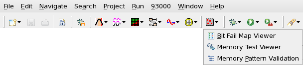
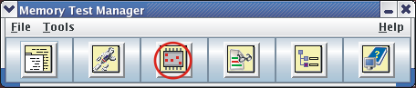

Starting the BFM Viewer
The BFM Viewer can be started from the SmarTest GUI, from the command line, or using an execution file.
Before you begin
SmarTest must be installed.
The DUT must have been set up and there must be a valid map converter library.
Procedure
-
In the menu bar of SmarTest, click .
Or, in the toolbar of SmarTest, click the Memory Test button and choose Bit Fail Map Viewer. See the following picture:

Alternatively, you can:
- Click the BFM Viewer icon from the Memory Test Manager.

- Or, from the command line, execute the bfm command.
This executes a shell script located in /opt/93000mts/mts/bfm/bin/.
- Or, double-click the shell script in the
/opt/93000mts/mts/bfm/bin/bfm directory.
The Set Device Configuration window opens.

- Click the BFM Viewer icon from the Memory Test Manager.
What to do next
Functional changes
- Introduced before SmarTest 6.3.2
- MTP 3.2.1: The Set Device Configuration window is updated to have a new parameter, "Bitmap Path".